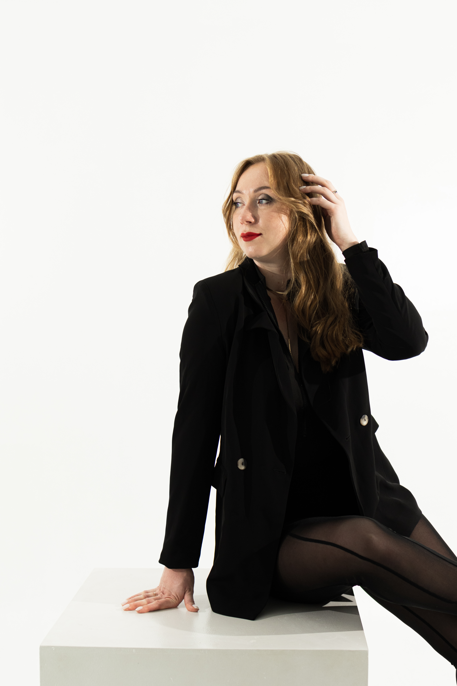
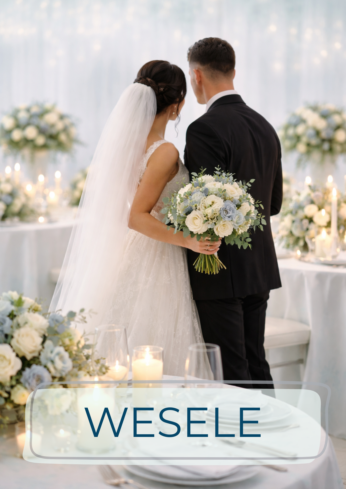

Tworzę wyjątkowe wydarzenia dopasowane do Waszych marzeń i potrzeb.
Dbam o detale, atmosferę i spokój w dniu, który ma znaczenie.
Ty celebrujesz — ja planuję.

By My Planner: powstało z miłości do pięknych chwil i potrzeby tworzenia wydarzeń, które naprawdę mają znaczenie. Tak naprawdę wszystko zaczęło się jeszcze wcześniej — od pomocy przy organizacji ślubu mojego kuzyna. To wtedy po raz pierwszy odkryłam, jak wiele radości daje mi wspieranie bliskich w tak ważnych momentach i dbanie o to, by każdy detal był dokładnie tam, gdzie powinien. Moja historia na dobre nabrała tempa podczas organizacji własnego wesela. To właśnie wtedy zrozumiałam, jak ogromną satysfakcję daje mi planowanie, dopracowywanie detali i tworzenie atmosfery, w której inni mogą po prostu być—obecni, spokojni i szczęśliwi. Od tamtej pory wiem, że to właśnie jest moja droga. Mam polsko-ukraińskie korzenie i od ponad 10 lat mieszkam w Polsce. Pracuję w trzech językach: polskim, angielskim i ukraińskim.
Dzięki temu naturalnie łączę różne kultury, tradycje i oczekiwania, tworząc wydarzenia dopasowane do międzynarodowych par. Doskonale rozumiem oczekiwania, tworząc wydarzenia dopasowane do międzynarodowych par. Doskonale rozumiem zarówno polskie, jak i ukraińskie obyczaje, co pozwala mi działać swobodnie i z pełnym wyczuciem. Posiadam również praktyczną wiedzę dotyczącą procesów formalnych i dokumentacyjnych, w tym procedur związanych z zawarciem ślubu w Polsce przez cudzoziemców, dzięki czemu mogę realnie wspierać pary nie tylko organizacyjnie, ale i praktycznie. Jestem osobą kreatywną, wrażliwą na estetykę i detale — to one tworzą spójną całość i nadają wydarzeniom charakter. W swojej pracy stawiam na elegancję, subtelność i nowoczesną prostotę. Działam z sercem, uważnością i spokojem — abyście w dniu swojego wydarzenia mogli skupić się na emocjach, nie na organizacji.
Specjalizuję się głównie w organizacji wesel, ale z przyjemnością tworzę również inne wyjątkowe wydarzenia



Działam na terenie Katowic, Śląska, całej Polski, a także za granicą — z możliwością dojazdu i pełnej organizacji na miejscu. Każda oferta jest indywidualnie dopasowana — bo każde wydarzenie zasługuje na własną historię.

Zaczynamy od spokojnej, niezobowiązującej rozmowy — online lub na żywo. Chcę poznać Was, Waszą historię, potrzeby oraz wyobrażenie o wydarzeniu. To moment na pytania, inspiracje i sprawdzenie, czy dobrze się rozumiemy.

Na podstawie rozmowy przygotowuję dopasowaną ofertę. Zawiera ona zakres moich działań, sposób współpracy oraz wycenę — wszystko jasno i przejrzyście.

Po akceptacji oferty podpisujemy umowę, która zabezpiecza obie strony i porządkuje zasady współpracy. Od tego momentu biorę organizację w swoje ręce.

Tworzę plan działania — budżet, harmonogram i spójną koncepcję wydarzenia. Dobieram sprawdzonych wykonawców, koordynuję kolejne etapy i dbam o każdy detal. Jesteśmy w stałym kontakcie, a Wy na bieżąco macie pełen obraz postępów.

W dniu wydarzenia czuwam nad przebiegiem całości — realizacją harmonogramu, współpracą z podwykonawcami i atmosferą spokoju. Jestem obecna tam, gdzie trzeba, reaguję zanim pojawi się problem i zdejmuję z Was wszystkie obowiązki.
Ty celebrujesz.
Ja planuję.


Każde wydarzenie to osobna historia, emocje i detale. W tej przestrzeni dzielę się inspiracjami, stylami oraz wybranymi realizacjami — od kameralnych przyjęć po większe projekty, które pokazują moje podejście do planowania i estetyki. To miejsce tworzone z myślą o parach i klientach, którzy cenią elegancję, harmonię i subtelne piękno
Jeśli marzysz o wyjątkowym weselu lub wydarzeniu — zapraszam do kontaktu.
Znajdziesz mnie również na Instagramie, gdzie dzielę się inspiracjami i kulisami mojej pracy. Razem stworzymy coś pięknego.